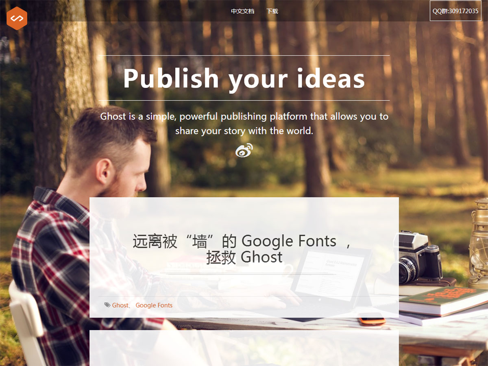
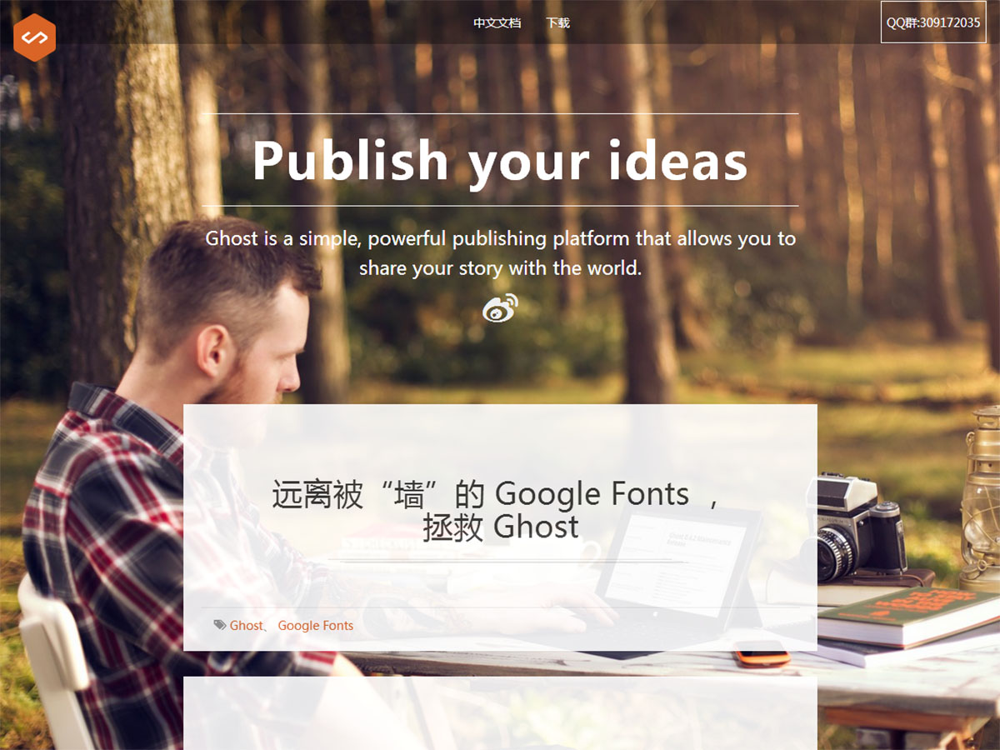

为所有开发者、所有应用场景而设计。
Bootstrap 让前端开发更快速、简单。所有开发者都能快速上手、所有设备都可以适配、所有项目都适用。
-

预处理脚本
虽然可以直接使用 Bootstrap 提供的 CSS 样式表，不要忘记 Bootstrap 的源码是基于最流行的 CSS 预处理脚本 - Less 和 Sass 开发的。你可以采用预编译的 CSS 文件快速开发，也可以从源码定制自己需要的样式。
-

一个框架、多种设备
你的网站和应用能在 Bootstrap 的帮助下通过同一份代码快速、有效适配手机、平板、PC 设备，这一切都是 CSS 媒体查询（Media Query）的功劳。
-

特性齐全
Bootstrap 提供了全面、美观的文档。你能在这里找到关于 HTML 元素、HTML 和 CSS 组件、jQuery 插件方面的所有详细文档。
Bootstrap 是完全开源的。它的代码托管、开发、维护都依赖 GitHub 平台。
查看Github主页 
